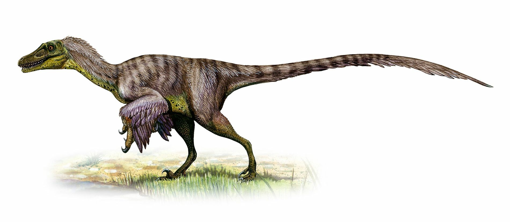
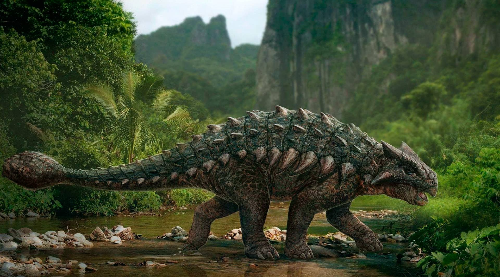
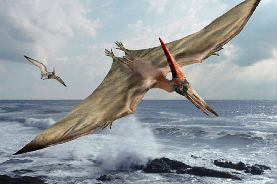

Inicio

Tyrannosaurus

Brontosaurus
Ankylosaurus

Plesiosaurus
Pterodactylus

Velociraptor (lat. "ladrón veloz") es un género con 2 especies conocidas de dinosaurios terópodos dromeosáuridos que vivieron hacia finales del período Cretácico, entre 75 a 71 millones de años durante el Campaniaense, en lo que es hoy Asia. Durante mucho tiempo solo se ha reconocido a una especie, Velociraptor mongoliensis, cuyos fósiles se han hallado en Asia Central, en Mongolia, pero una segunda especie, Velociraptor osmolskae, fue nombrada en 2008 a partir de material craneal procedente de Mongolia Interior, en China.
Aunque más pequeño que otros dromeosáuridos como Deinonychus y Achillobator, Velociraptor tenía muchos rasgos anatómicos similares a ellos. Fue un carnívoro bípedo, con una cola larga y rígida, y unas garras grandes con forma de hoz en cada pata, que probablemente le facilitaba el matar a sus presas. A diferencia de otros dromeosáuridos, el velociráptor poseía un cráneo bajo y alargado, y un hocico chato, dirigido hacia arriba. Poseía patas traseras de gran longitud, lo que expresa (al igual que el nombre) su aparente gran velocidad.
Debido a su destacada aparición en la novela de Michael Crichton Parque Jurásico, Velociraptor, en la película su nombre está a menudo abreviado en «raptor» o «raptores» y son representados mucho más grandes, es uno de los géneros de dinosaurios más conocidos por el público general. En la vida real, Velociraptor era aproximadamente del tamaño de un pavo, considerablemente más pequeño que los reptiles de aproximadamente 2 metros de altura y 90 kilogramos que se ven en las novelas y películas, que se basaron en Deinonychus, estrechamente emparentado y que se había propuesto como una especie del género, cosa que fue rechazada por los científicos. También es bien conocido por los paleontólogos, con no menos de una docena de esqueletos fósiles desenterrados, la mayor cantidad descubierta de un dromeosáurido. Un espécimen particularmente famoso es el que muestra a un Velociraptor enzarzado en una batalla con un Protoceratops.
Para ser un dromeosáurido, Velociraptor era relativamente pequeño, más pequeño que Deinonychus y Achillobator, los adultos alcanzaban en promedio una longitud de 1,8 metros, y 0,5 de altura a la cadera, pesando cerca de 15 kilogramos. El rango de tamaños varía de 1,5 y 2,07 metros de largo, con una masa corporal de entre 15 y 18,3 kilogramos.
Es posible de que Velociraptor estuviese cubierto de plumas, no solo plumón cobertor sino que también presentaba plumas complejas en los antebrazos semejantes a las rémiges de las aves actuales. Sin embargo, este curioso animal nunca pudo volar. Prominentes puntos de inserción en los antebrazos, posibles sitio de unión de las plumas del "ala" e indicador directo de una cubierta de plumas, se han informado del cúbito de un solo espécimen de Velociraptor, IGM 100/981, que representa un animal de aproximadamente 1,5 metros de largo. y 15 kilogramos de peso. El espacio de 6 protuberancias conservadas sugiere que pueden haber estado presentes 8 protuberancias adicionales, lo que da un total de 14 protuberancias en el que se desarrollaron grandes plumas secundarias, plumas de "ala" que se derivan del antebrazo.Sin embargo, el número de muestra se ha corregido a IGM 100/3503 y su remisión a Velociraptor puede requerir una revaluación, en espera de más estudios. Sin embargo, existe una fuerte evidencia filogenética de otros parientes de dromeosáuridos que indican la presencia de plumas en Velociraptor, incluidos dromeosáuridos como Microraptor o Zhenyuanlong.
Inicio |
Tyrannosaurus |
Brontosaurus |
|  Ankylosaurus |
Plesiosaurus |
 Pterodactylus |